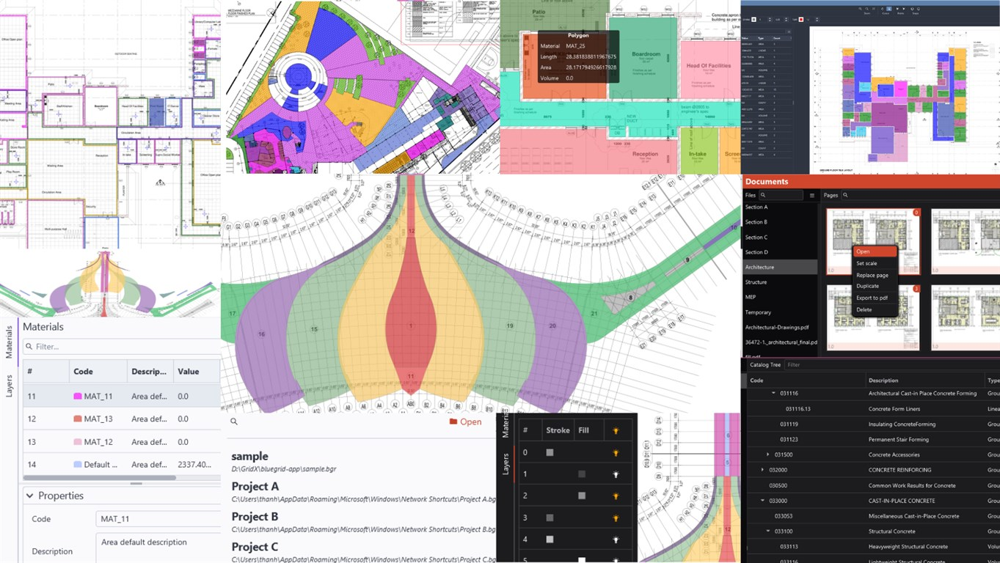
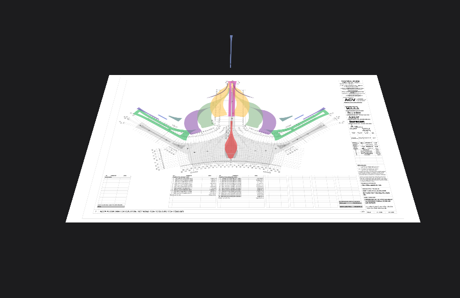

We are regularly shipping new updates and features.
Your project data is long-term supported.
Please stay updated!
Modern construction quantity take-off and markups.
Implemented features and functions
- PDF support: Supports PDF files with vector and image formats.
- Bill of Material: Lists or exports the bill of material directly on PDF blueprints or to csv (excel) files.
- Import and Export: Imports and exports files to and from PDF, CSV, JSON, etc. for re-use and sharing.
- Fast and precise point snap: Provides fast and precise point snap for accurate measurements.
- Real-time rendering: Renders in real-time with thin lines for the best experience.
- Drawing tools: Provides drawing tools to create shapes, markups, and annotations with metric properties for various use cases.
- Note-taking: Allows you to add notes with text, callout, cloud, and unlimited block shapes.
- Shape manipulation: Enables you to transform, flip, rotate, scale, resize, and style shapes, markups, notes, and annotations with 16 million colors.
- Material coding: Codes and standardizes materials for easy identification.
- Drag-and-drop material: Allows you to drag and drop materials onto shapes.
- PDF layer: Provides layer on/off functionality to focus on things that matter.
- Work Breakdown Structure (WBS): Enables you to build, add, modify, customize, and standardize multiple WBSs.
- 3D stack view: Provides a 3D view and animation for convenient work review.
On-plan features and functions
- Select snap: Enables snap while transforming shapes.
- Pick shapes in PDF: Creates shapes with one click pick.
- Select text in PDF blueprint: Selects and copies text from PDF blueprints.
- Find text in PDF blueprint: Enables text search in PDF.
- Compare/Review PDF: Compares two versions of a blueprint.
- Auto find and count: Automatically counts the number of similar blocks.
- Pick shapes and convert to blocks: Picks a shape on a PDF and converts it into a block tool.
- Other quantity take-off tools: Gradually fulfills the need of the industry.
- BlueGrid SDK for Python: Allows conversion and transformation of data.
- Cloud and enterprise functions: Supports quantity management at the enterprise level.
- Cost module:
Demo



